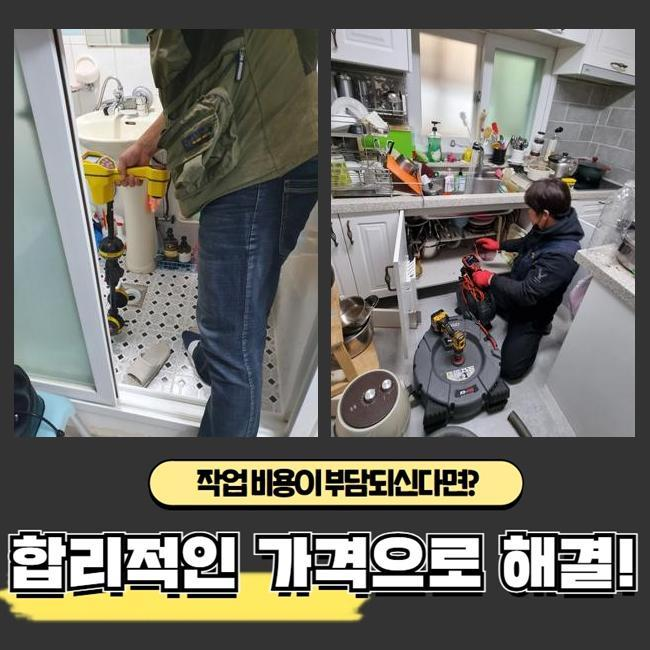
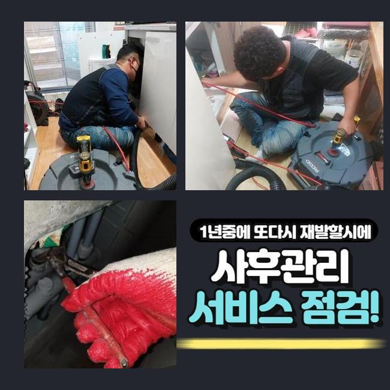
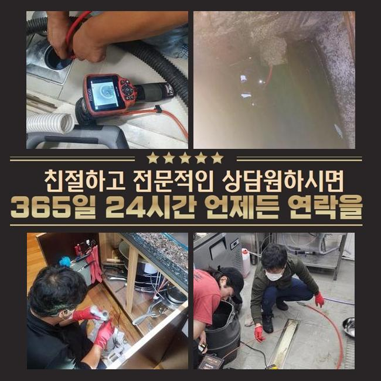
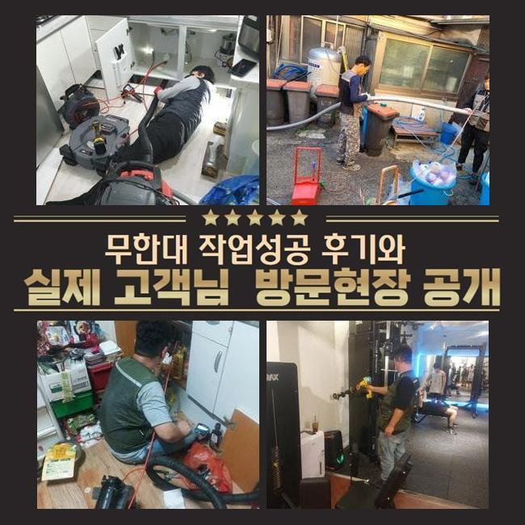
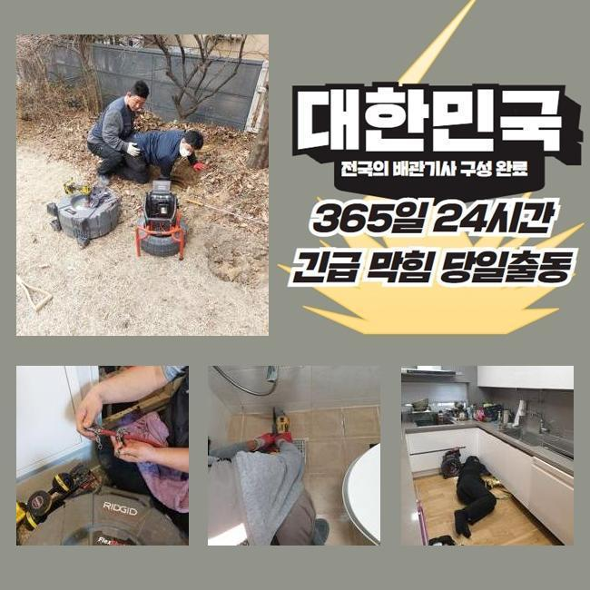
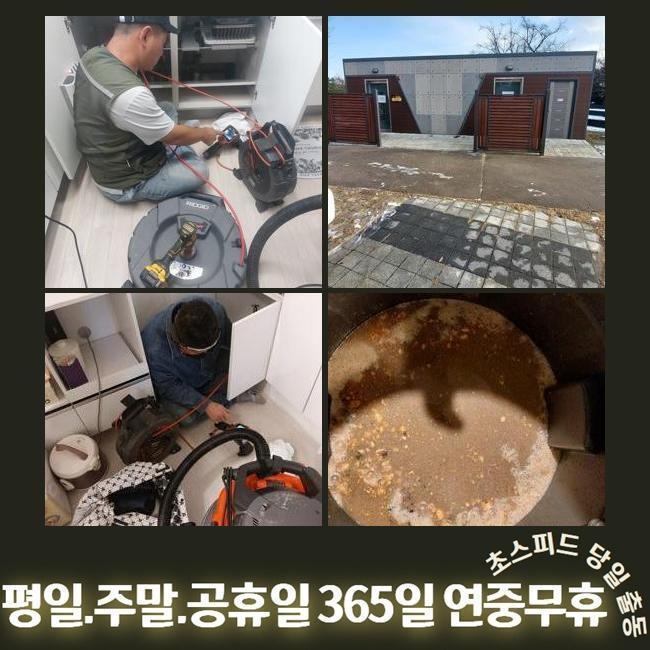

🏠 강북 미아동세탁실뚫음 인수동 맨홀역류 배관전문
용인 하수구막힘 전문 시공 후기

📋 작업 개요
- 위치: 용인
- 서비스 유형: 하수구막힘, 배관막힘, 맨홀막힘, 집수정막힘, 역류해결, 뚫는업체, 배관청소, 설비공사
- 작업 일시: 2025. 3. 14. 15:40
- 업체명: 하수구수사대 (010-5615-2118)
🔍 문제 상황
강북 미아동세탁실뚫음 인수동 맨홀역류 배관전문
공동 주택의 배수구를 점검하지 않는 경우엔 불순물이 쌓여 배수구 막힘사고가 일어날 일들이 많아집니다
사용하고 계시는 하수시설의 사용기간이 오래 된 경우라면 주기를 정해두시고 업체에 요청하셔서 배수구의 컨디션을 파악하시는 것이 좋습니다
점심쯤이 지나서 고객분께서 배수라인이 막혀 역류가 발생한다고 전화를 해주셨어요
긴급하게 출동을 해서 살펴보니 약간 외딴 지역의 다세대주택으로 주변에 캠핑시설이 위치해있는 상태였어요
주택을 지으신게 오래되지 않은 새집인데 건물 바깥쪽에서 역류사고가 자꾸 발생한다고 말씀 해주셨어요
확인해봤더니 창고에 설치 되어있는 집수정에서 밖에 위치해있는 정화조쪽으로 유입되는 상황이였습니다
정화조가 위치한 곳이 꽤 멀어서 이곳에 설치 하셨다고 말씀하셨어요
사례자님께 막힌지점을 찾아도 중간부분에 점검구가 없는 경우라면 좀 더 시간이 많이 걸린다고 안내 해드렸고 동의를 해주셨습니다
집수정쪽에서 내시경장비를 투입해봤으나 불순물이 많아서 정화조쪽으로 카메라가 들어가지 못했어요

🔎 원인 분석
💡 전문가 진단: 정밀 진단 장비를 사용하여 슬러지의 고착 여부를 판명하고 타격/세척 작업을 실시했습니다.
불순물이 가득하게 차있는걸 고객분에게도 보여드리고 설명을 드렸습니다
샤프트장비로 작업을 시작했어요
기계의 체인부분에 머리카락들과 물티슈들이 끝도없이 엉켜서 빠져나왔어요
연립주택의 막힘사고의 원인들은 머리카락이나 물티슈등이 제일 많이 나옵니다
고객분께 모두 분리하여 배출하시라고 말씀 드렸어요
물티슈 자체는 화학제품으로 종이류가 아닌 플라스틱 그 자체이므로 물과 만나도 녹지 않는 특징을 가지고 있습니다
최근에 물에 잘 풀어지는 제품도 나왔다고 하지만 많은 양을 한번에 쓰는 경우 배수구가 막히면서 역류상황이 벌어지게 됩니다
배수관 속에 있었던 노폐물과 합쳐져 슬러지화 되어 막히게 됩니다
사용자는 항상 물티슈와 작은 쓰레기 등은 분리하여 버리셔야 해요
하수구는 하수만을 다루는 시설인 것을 기억하셔서 이물질등은 분리배출을 원칙으로 하시길 바랍니다

🔧 작업 과정
집수정을 어느정도 마무리 하고 창고로 이동해서 내시경 작업을 이어갑니다
하수관이 매우 긴 경우라서 내시경기기계가 끝쪽까지 진입하는게 불가능해서 쏜드기기를 사용했어요
막힘문제가 있는 지점에 계속해서 침전물 제거과정을 이어나갔어요
앞에처럼 머리카락등의 이물질이 한가득 엉겨서 나오는걸 보시고나서 고객분께서도 심각함을 아시고 놀라셨습니다
저희 전문적인 업체에 이러한 문제현상이 일어나지 않는 방법을 자세히 문의하셔서 하나씩 상세하게 답변 드렸어요
보통 사용하시면서 작은 쓰레기 같은건 흘러가면 자연스레 물과 함께 배출된다고 알고 계시지만 배관의 경사도에 따라서 안쪽으로 침전물이 형성되므로 녹지 않는 물티슈와 기름등을 흘려보내면 위험합니다
내시경기기를 활용해서 이물질들이 모두 배출되었는지 체크했어요
정화조에서 시작하여 집수정까지 양쪽에서 체크를 하였고 남아있는 침전물 없이 아주 깔끔한 배관이 확인 되었어요
사례자님께도 보여드렸더니 만족해하셨습니다
대부분은 염산등을 부으면 쉽게 막힌부분을 뚫어낸다고 생각하시는 분들도 있지만서도 그런 방법은 옳지 않아요
의뢰인분께서 이용을 하시면서 찌꺼기를 흘려보내지 말고 주택의 연식이 오래 되신 경우엔 사전에 전문 기술진에게 의뢰하여 정기적인 검사를 진행하셔야 해요
사소한 문제를 방치하시는 경우엔 막힘문제가 발생하여 대규모 공사까지 번지게 되면서 금액적인 부담이 커지게 돼요
이처럼 배수관 문제를 방치하시면 비용적인 면에서 부담이 커진다는걸 잊지마시고 주의하셔야 합니다
작업이 끝난 후에 주변의 오염을 정리하고 청소를 진행했습니다
하수에서 부패된 냄새가 났으므로 세제를 뿌리고 닦은 후에 직접 호스를 끌고와서 대청소까지 완료했습니다
기본적으로 주변 장소까지 저희 전문 기술진이 대청소하는 일은 많지 않았습니다


✅ 작업 완료
이번에 작업한 현장은 오염의 정도가 심해도 너무 심해서 지나치지 못했습니다
저희 전문 기술진은 하수라인의 물티슈등은 물론 배수관 속의 오염물질들을 꺼내고 정상적인 통수가 잘 나오는지 최종점검을 꼭 진행해요
고객분께서 저희 전문진을 신뢰하고 맡기실 수 있도록 최선을 다할 것이며 관련하여 알고 싶으시다면 편안하게 전화 해주세요
배수구 막힘을 더 나은 방법으로 해결하시고자 한다면 빠른대응이 최선임을 알고 계셔야 합니다
고객님께 위와 같은 문제현상이 일어나지 않으면 좋겠으나 문제를 인지하셨다면 긴급하게 전문진에게 의뢰를 하시기 바랍니다




⚠️ 하수구 배관 막힘 예방 및 관리 가이드
- ✅ 머리카락, 비닐, 물티슈 등 물에 분해되지 않는 이물질은 하수구 유입을 절대 금지해 주세요.
- ✅ 하수구 거름망을 씌우고 모여진 이물질은 주기적으로 쓰레기통에 바로 비워주셔야 합니다.
- ✅ 배관 노후가 심할 경우 이물질이 더 쉽게 걸리므로 주기적인 배관 세척(고압세척 등)을 권장합니다.
- ✅ 작업 후 1년 이내 재발 시 하수구수사대에서 무상 A/S 보증 서비스를 제공합니다.
💡 핵심 정리
- 확실한 장비 작업(내시경 점검 및 샤프트 스케일링)으로 원인을 뿌리 뽑습니다.
- 작업 후 1년 이내에 동일한 부위 재발 시 100% 무상 A/S 서비스를 보장합니다.
- 서울 · 경기 · 인천 전 지역에 24시간 언제든 긴급 출동할 수 있도록 항시 대기 중입니다.
❓ 자주 묻는 질문 (FAQ)
🚨 용인 하수구막힘 문제로 고민이신가요?
정확한 원인 진단과 확실한 시공으로 재발 없는 해결을 약속드립니다.
24시간 긴급 출동 | 서울 · 경기 · 인천 전지역 | 1년 내 재발 시 무상 A/S